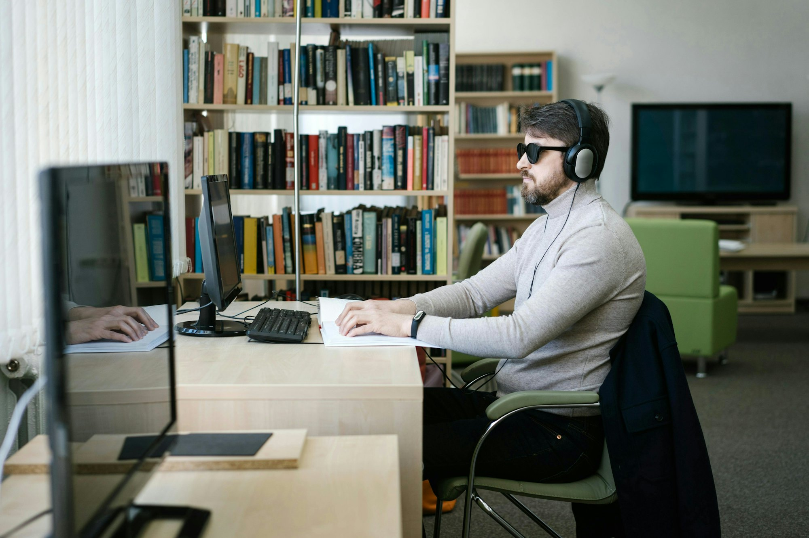

시각장애인을 위한 화상회의 화면 해설
화면이 보이지 않아도
회의를 놓치지 않게
발표자가 “여기 보시면” 하고 넘어가는 순간, 말로 채워지지 않은 화면 정보를 시온이 찾아 짧게 들려줘요. 회의 흐름을 끊지 않는 때를 골라서요.
- Google Meet 회의에서 동작해요
- 애매하면 말하지 않아요
- 회의 내용을 외부 AI로 보내지 않아요
왜 만들었나요
화면을 띄우는 순간, 누군가는 회의에서 멀어져요
- “여기를 보시면”
- “보시는 것처럼 30%예요”
- “이거 좋아하시잖아요”
화상회의에서 발표자는 모두 화면을 보고 있다고 여기고 말해요. 무엇을 가리키는지, 그 숫자가 무엇인지는 화면에 맡기고 말로는 건너뛰죠. 화면을 볼 수 없는 사람에게는 바로 그 부분이 비어 있어요.
다른 사람이 공유한 화면은 영상으로 전해져서 화면 낭독 프로그램이 읽지 못해요. 글자를 뽑아내는 OCR을 써도 표와 그래프의 짜임, 발표자가 가리킨 곳까지는 알 수 없어요.
그래서 지금은 회의 중에 옆 사람에게 묻거나, 회의가 끝난 뒤에야 내용을 확인해요. 시온은 말로 채워지지 않은 빈자리만 골라 소리로 채워요. 화면을 처음부터 끝까지 읽어 주지는 않아요. 그러다 보면 회의가 먼저 지나가 버리니까요.
- 92%22명
- 회의 흐름을 한 번 놓치면 다시 따라가기 어려워요
- 71%17명
- 화면 공유 때 이미지·그래프·표 내용을 이해하지 못해요
- 71%17명
- 이런 어려움 때문에 발언이나 참여를 망설이거나 포기한 적이 있어요
- 63%15명
- “여기”처럼 가리키며 설명하면 무엇인지 알 수 없어요
2026년 7~8월, 시각장애인 24명이 답한 설문이에요. 회의 중 옆 사람에게 묻는다는 분이 8명, 회의가 끝나야 내용을 확인할 수 있다는 분이 12명이었어요.
성능
찾아야 할 자리를 찾고, 비어 있던 이해를 채워요
- 96.1
- 탐지 성능 · F1 점수발표자의 말에서 화면을 봐야 알 수 있는 빈자리를 얼마나 정확히 찾는지 잰 값이에요. 한국어와 영어를 절반씩 섞은 3,600문항으로 쟀어요.
- +20.8%p
- 이해도 · 도달률 증가폭화면을 보며 들었을 때 이해하는 정도를 100으로 두고, 회의 소리만 들을 때와 시온 해설을 함께 들을 때를 견줬어요. 시온 해설로 그만큼에 20.8%p 더 가까워졌어요. 강의·회의·보고 영상 30개로 쟀어요.
이해도는 사람 대신 다른 계열의 AI가 문제를 풀어 잰 값이에요. 같은 문제를 일반인 9명에게도 풀게 해서 AI의 결과가 사람의 결과와 같은 쪽을 가리키는지 확인했어요. 시각장애 당사자와 함께하는 평가는 2026년 11월에 할 예정이에요.
어떻게 쟀는지 자세히 보기둘러보기